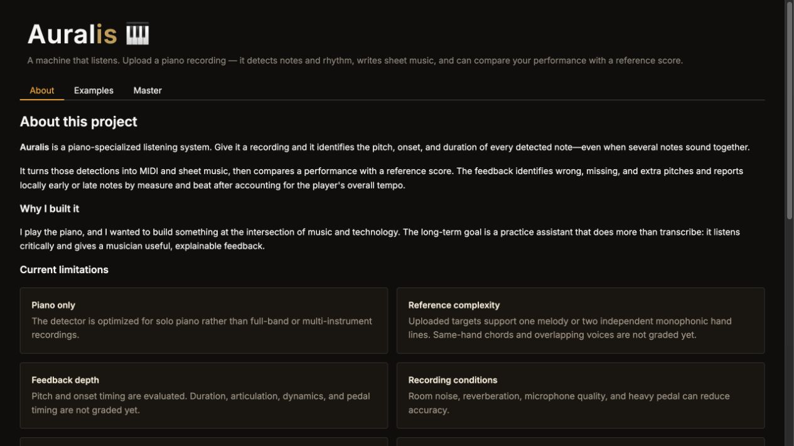

I am a junior at The Hotchkiss School in Lakeville, Connecticut, and a pianist in the Precollege Division of the Manhattan School of Music, where I study piano with Professor Delana Thomsen and chamber music with Professor Claudia Knafo, and sing in the Senior Select Choir.
I began the piano at the age of seven with David Brooks and gave my first solo recital in 2024. My international competition honors include Second Prize at the Apex International Piano Competition, First Prize at both the Vivo and Musical Life competitions, multiple prizes at Golden Key and Charleston International, Fourth Prize in the Chopin Avenue Concerto Competition, and Fifth Prize in the Chopin Avenue Solo Competition.
I have performed at Carnegie Hall's Weill Recital Hall and Zankel Hall, as well as the Kaufman Music Center's Merkin Concert Hall. My Chopin Avenue award also included a performance with the Warsaw Philharmonic at Warsaw Philharmonic Hall.
Away from the keyboard, I bring together technology and the arts. Through Creativitas at MIT, I created a conductor's-baton-like electronic instrument that uses buttons, scroll wheels, and gyroscopes to control music through a synthesizer. I am also developing Auralis, my independent AI-powered piano transcription and practice tool. I brought Auralis to Stanford University and Carnegie Mellon University, where I worked with professors and presented it to startup CEOs and students for feedback and advice. I'm drawn to mathematics and science, and I race alpine skis and play racquet sports.
Download CVMultiple top prizes, followed by a winners' performance at Carnegie Hall's Weill Recital Hall.
Recognized among the top young pianists in the competition's seasonal rounds.
Awarded for solo piano performance.
The final round was held at Zankel Hall at Carnegie Hall in New York City.
The concerto award included a performance with the Warsaw Philharmonic at Warsaw Philharmonic Hall.
Finalist across the 2025 Classical, Spring, and Finale rounds with works by Haydn, Rachmaninov, and Mendelssohn.
Piano with Prof. Delana Thomsen; chamber music with Prof. Claudia Knafo; Senior Select Choir.
Independent secondary school; pursuits in mathematics, science, and music.
Attended before transferring to The Hotchkiss School.
Solo piano with Conor Hanick and chamber music with Richie Hawley.
Masterclasses with Mariko Sato, Fabio & Gisele Witkowski, Michel Bourdoncle, Leonel Morales, and Oxana Yablonskaya.
Intensive courses in advanced mathematics.
Created through Creativitas at MIT, this conductor's-baton-like electronic instrument uses four buttons, scroll wheels, and gyroscopes to create and control music through a synthesizer. It premiered in concert.
Explore the project
My independent AI-powered piano transcription and practice project. Auralis listens to piano recordings, detects notes, chords, rhythm, and dynamics, and converts performances into MIDI and readable notation. I developed the project further through feedback from professors, startup CEOs, and students at Stanford and Carnegie Mellon.
Explore the projectRaced to the Vermont state level in alpine skiing.
Earned a 2nd dan (second-degree black belt) over several years.
Member of the junior varsity squash team.
Lead builder on the high-school robotics team, focusing on the robot's movement system and flywheel. The team advanced to the state-level tournament and received the Judges' Choice Award.
Active member, with advanced coursework through AwesomeMath.
Competitive tennis and squash player.
I am interested in internships, mentored projects, and collaborations in music technology, AI, robotics, hardware prototyping, audio, and software.
For performance inquiries, collaborations, or just to say hello — I'd love to hear from you.
edouard@ferragu.net